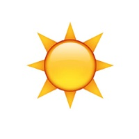

Contact the AfterStorm staff!
AfterStorm is a project for Human Computer Interaction (C S 3053) at the University of Oklahoma.
Travis Canales

Rondell Hames
Nicole Knox
Patrick Wrape
- JavaScript Developer (Server Side)
- Major: Computer Science
- Minor: C
- Graduation: D
- Email: Travis.R.Canales-1@ou.edu
- JavaScript Developer (Client Side)
- Major: Electrical Engineering
- Minor: C
- Graduation: May 2015
- Email: Rondell.L.Hames-1@ou.edu
- Front-End Developer
- Major: Computer Science
- Minor: Japanese
- Graduation: May 2016
- Email: Nicole.A.Knox-1@ou.edu
- Back-End Developer
- Major: Computer Science
- Minor: C
- Graduation: May 2016
- Email: Patrick.J.Wrape-1@ou.edu